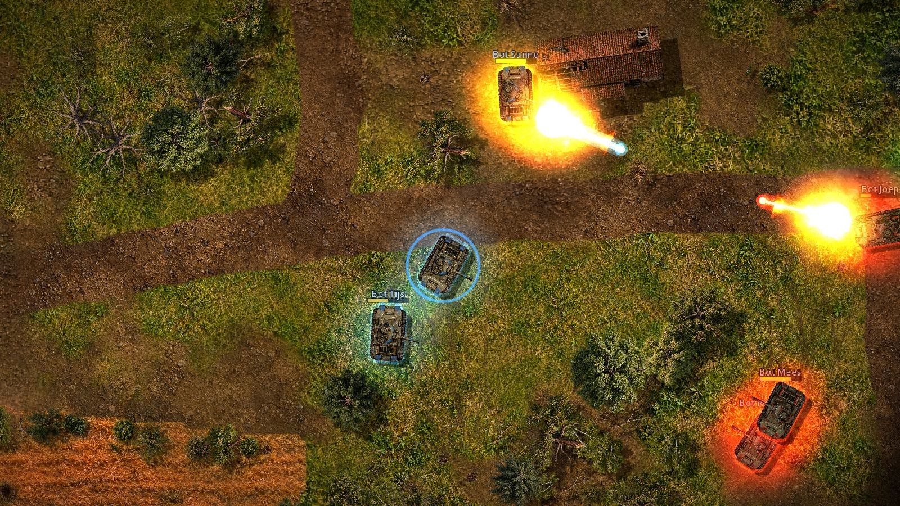
Een tankspel voor thuis.
Rij, richt en schiet. Bomen, struiken en schuren gaan onderweg kapot.
Rij de ene kant op en schiet de andere kant op. Beweeg je muis over de tank om te richten.
Art uit het spel
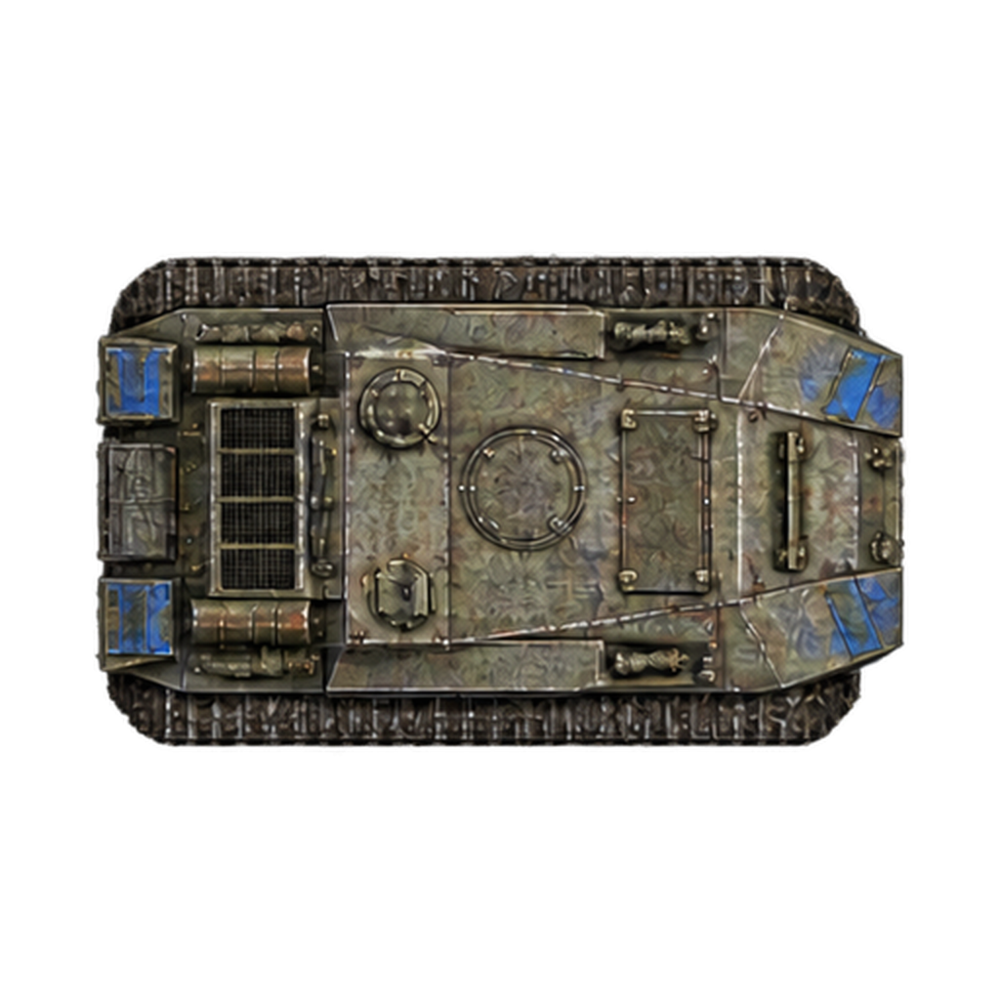
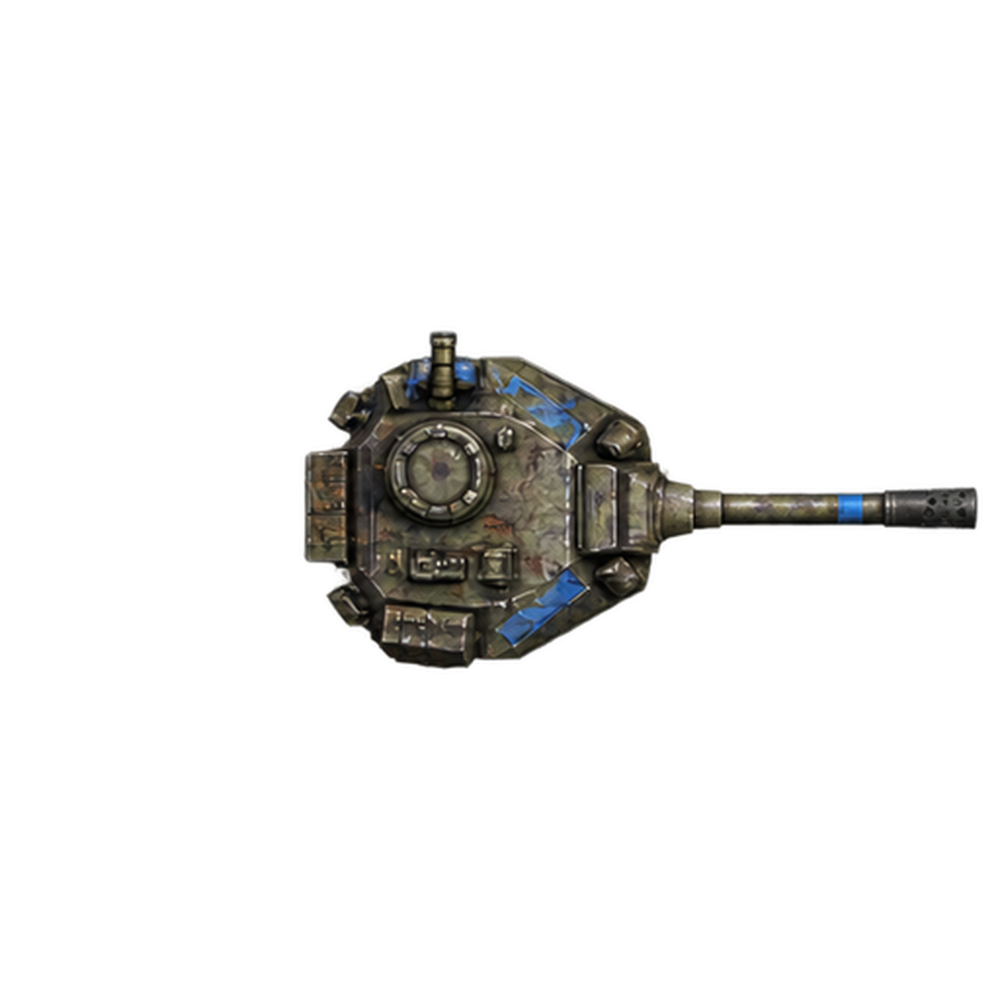
100 levenspunten Herladen 0,6 s Koepel draait los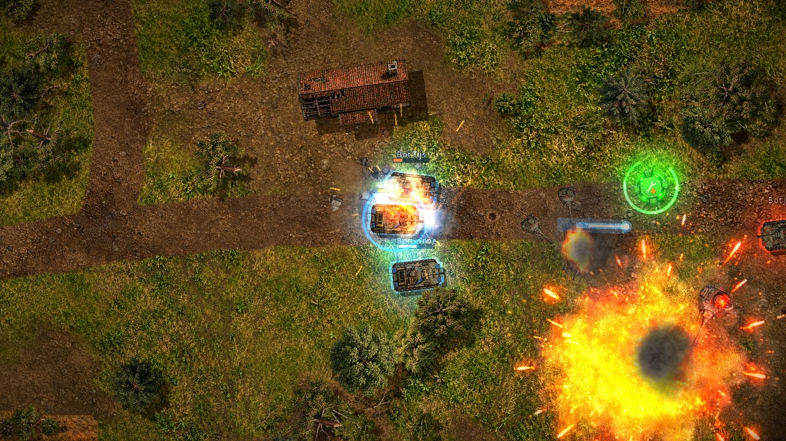
Schermafbeelding uit het spelVerbind met de server en je zit in het lopende potje. Lege plekken worden opgevuld met bots. Offline oefenen kan ook.
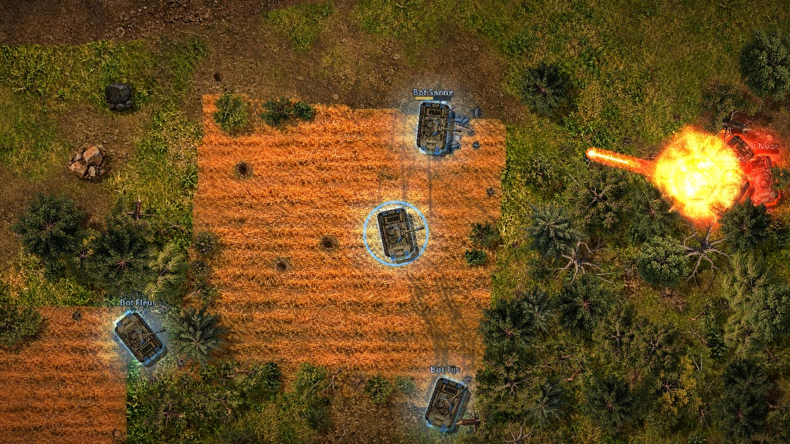
Schermafbeelding uit het spelStruiken en jonge bomen rij je plat. Grote bomen en boerderijen schiet je kapot. Rotsen blijven staan, dus daarachter kun je schuilen.
Je ziet alleen wat je team ziet. Onder bomen ben je lastiger te spotten, en wie schiet, is even van ver zichtbaar.
Explosies met drukgolf en vonken, koepels die van een wrak vliegen, sporen en kraters die blijven liggen.
Toetsenbord en muis, gamepad, of touch met twee duimsticks.
Het landschap wordt per server en per oefenpotje opnieuw gegenereerd.
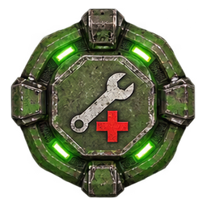
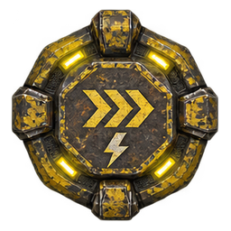
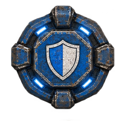
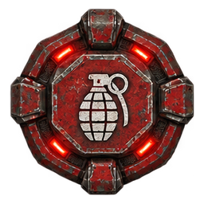
Power-ups liggen verspreid over de kaart. Na 14 seconden ligt er op dezelfde plek een nieuwe.
Schermafbeelding uit het spel
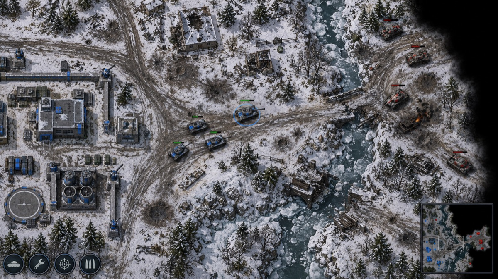
Conceptbeeld, nog niet in het spel
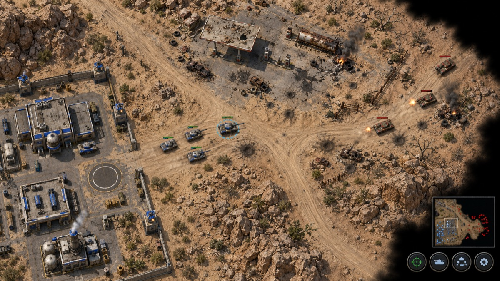
Conceptbeeld, nog niet in het spel
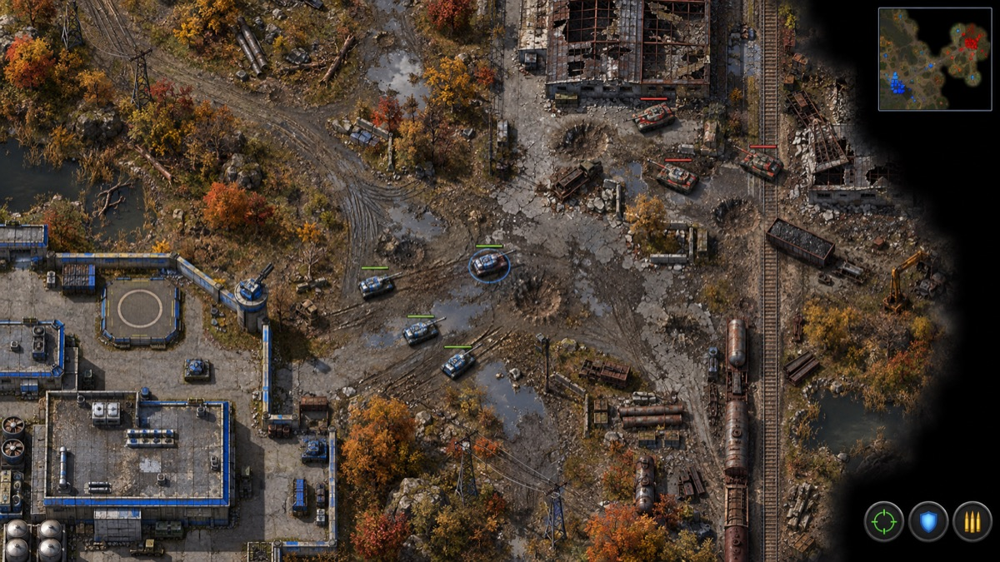
Conceptbeeld, nog niet in het spel
Tankeretank is een hobbyproject en in ontwikkeling. Dit is de volgorde waarin er dingen bij komen.
Eén kaart, online spelen, bots in drie niveaus, power-ups, geluid en muziek.
Extra wapens, rookgranaten, mijnen, airdrops en killstreaks.
Veroveringspunten, capture the flag, ieder voor zich.
Winter-, woestijn- en herfstkaarten. Voertuigen zoals buggy en helikopter.
De spelserver, de accounts en de downloads staan voorlopig uit. Deze pagina blijft staan om te laten zien wat Tankeretank is.